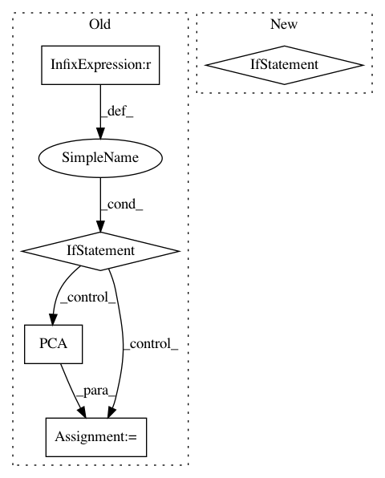

0b8fa85175f95425807d6d38a38d0c6fae737e57,prody/dynamics/nmdfile.py,,parseNMD,#Any#Any#,212
Before Change
eigvals = eigvals[:, 1] ** 2
if is3d:
if eigvals is not None and np.all(eigvals[:-1] >= eigvals[1:]):
nma = PCA(name)
else:
nma = ANM(name)
else:
nma = GNM(name)
if count != array.shape[1]:
array = array[:, :count].copy()
After Change
type = ANM
elif "GNM" in type:
type = GNM
elif "PCA" in type or "EDA" in type:
type = PCA
elif type == "NMA":
type = NMA
In pattern: SUPERPATTERN
Frequency: 3
Non-data size: 5
Instances
Project Name: prody/ProDy
Commit Name: 0b8fa85175f95425807d6d38a38d0c6fae737e57
Time: 2018-05-14
Author: jamesmkrieger@gmail.com
File Name: prody/dynamics/nmdfile.py
Class Name:
Method Name: parseNMD
Project Name: metric-learn/metric-learn
Commit Name: 130cbadff294b686e466d430f26b2d069f6bbf59
Time: 2019-06-07
Author: 31916524+wdevazelhes@users.noreply.github.com
File Name: metric_learn/mlkr.py
Class Name: MLKR
Method Name: fit
Project Name: automl/ParameterImportance
Commit Name: 4e3de39a18a8d9ad66492afffced84e8e084f4cb
Time: 2017-12-05
Author: biedenka@informatik.uni-freiburg.de
File Name: pimp/evaluator/forward_selection.py
Class Name: ForwardSelector
Method Name: run